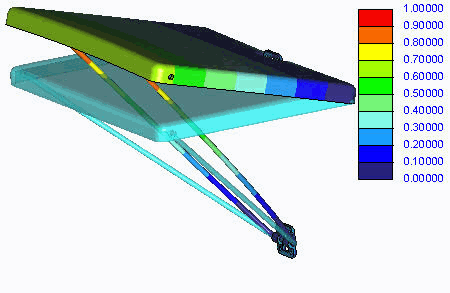

过程: 使用模态分析
“关闭窗口”(Close Window)
 “拭除未显示的”(Erase Not Displayed)
“拭除未显示的”(Erase Not Displayed) Simulate_Analysis\ModalAnalysis
FOLDING_TABLE_SIMULATE.ASM
|
|
||
 |
Creo Parametric 用户打开 FOLDING_TABLE.ASM。 | |
|
|
||
-
任务 1. 在装配中的所有元件之间定义一个自由界面。
1. 在功能区中，选择“主页”(Home) 选项卡。
2. 单击“设置”(Set Up) 组中的“模型设置”(Model Setup)
 。“模型设置”(Model Setup) 对话框随即出现。
。“模型设置”(Model Setup) 对话框随即出现。
3. 从“默认界面”(Default Interface) 下拉列表中选择“自由”(Free)。
4. 单击“确定”(OK)。
-
任务 2. 定义装配中元件的材料。
1. 在功能区中，选择“主页”(Home) 选项卡。
2. 在“材料”(Material) 组中单击“材料”(Materials)
 。将出现“材料”(Materials) 对话框。
。将出现“材料”(Materials) 对话框。
3. 从“材料”(Materials) 列表中选择 ss.mtl，然后单击“添加材料”(Add Material)
 。
。
4. 从“材料”(Materials) 列表中选择 pvc.mtl，然后单击“添加材料”(Add Material)
。
5. 单击“确定”(OK)。
了解您正在使用的、独立于其源 (默认或自定义的库) 的材料的属性始终是一种好的做法。为此，可在“材料”(Materials) 列表中的某个材料上单击鼠标右键，并选择“属性”(Properties)。
6. 在“材料”(Material) 组中单击“材料分配”(Material Assignment)
 。将出现“材料分配”(Material Assignment) 对话框。
。将出现“材料分配”(Material Assignment) 对话框。
7. 按住 CTRL 键并从模型树中选择 JOINT_AXIS.PRT 和 CLAMPING_YOKE.PRT。
8. 在“属性”(Properties) 部分，从“材料”(Material) 下拉列表中选择 SS，并校验已在“材料方向”(Material Orientation) 字段中选择“(无)”((None))。
9. 单击“确定”(OK)。
10. 在“材料”(Material) 组中单击“材料分配”(Material Assignment)
。将出现“材料分配”(Material Assignment) 对话框。
11. 按住 CTRL 键并从模型树中选择 DESK_PLATE.PRT 和 BRACKET.PRT 元件。
12. 在“属性”(Properties) 部分，从“材料”(Material) 下拉列表中选择 PVC，并校验已在“材料方向”(Material Orientation) 字段中选择“(无)”((None))。
13. 单击“确定”(OK)。
-
任务 3. 定义并运行模态分析。
1. 在功能区中，选择“主页”(Home) 选项卡。
2. 在“运行”(Run) 组中单击“分析和研究”(Analyses and Studies)
 。将出现“分析和设计研究”(Analyses and Design Studies) 对话框。
。将出现“分析和设计研究”(Analyses and Design Studies) 对话框。
3. 单击“文件”(File) > “新建模态分析”(New Modal)。“模态分析定义”(Modal Analysis Definition) 对话框随即出现。
4. 按下列步骤完成对话框：
- 在“名称”(Name) 字段中键入 desk_modal。
- 校验“使用刚性模式搜索”(With rigid mode search) 未被选中。
- 选择“模式”(Modes) 选项卡。在“模式数”(Number of Modes) 字段中键入 6。
- 选择“输出”(Output) 选项卡。取消选择“计算”(Calculate) 部分中的所有框。
- 在“绘制栅格”(Plotting Grid) 字段中键入 2。
如果仅对模式形状及其频率感兴趣，则可以关闭任何额外的计算并降低“绘制栅格”(Plotting Grid) 的默认设置。这样，可避免使用额外的磁盘空间或 RAM 资源，并且模拟运行的速度将会更快。
- 选择“收敛”(Convergence) 选项卡。在“方法”(Method) 字段中选择“单通道自适应”(Single-Pass Adaptive)。
5. 单击“确定”(OK)。
6. 在“分析和设计研究”(Analyses and Design Studies) 对话框中选择 desk_modal，然后单击“开始运行”(Start Run)
 。单击“是”(Yes) 以运行交互诊断。
。单击“是”(Yes) 以运行交互诊断。
7. 分析完成后，单击“显示研究状况”(Display Study Status)
 查看汇总报告。
查看汇总报告。
注意，“模态分析”已失败。在汇总报告中，Creo Simulate 将指出失败的原因。原因是可折叠的托盘具有刚体模式。换句话说，该托盘可以在没有变形的情况下自由移动。考虑到元件之间定义的连接，的确会如此。
8. 关闭所有对话框并返回至“分析和设计研究”(Analyses and Design Studies) 对话框。
9. 右键单击 desk_modal 并选择“编辑”(Edit)。“模态分析定义”(Modal Analysis Definition) 对话框随即出现。
10. 按下列步骤完成对话框：
- 选择“使用刚性模式搜索”(With rigid mode search)。
- 所有其他设置保持不变。
11. 单击“确定”(OK)。
12. 在“分析和设计研究”(Analyses and Design Studies) 对话框中选择 desk_modal，然后单击“开始运行”(Start Run)
。如果需要，单击“是”(Yes) 来运行交互诊断并移除现有的文件。
13. 分析完成后，单击“显示研究状况”(Display Study Status)
查看汇总报告。
请注意在汇总报告中每种模式的频率值。请注意刚性模式 (模式 1) 的频率。将在您打开选项搜索刚性模式之后报告这一频率。
14. 关闭所有对话框并返回至“分析和设计研究”(Analyses and Design Studies) 对话框。
-
任务 4. 创建结果窗口并检查结果。
1. 在“分析和设计研究”(Analyses and Design Studies) 对话框中选择 desk_modal。
2. 单击“审阅结果”(Review Results)
 。将出现“结果窗口定义”(Result Window Definition) 对话框。
。将出现“结果窗口定义”(Result Window Definition) 对话框。
3. 完成以下步骤：
- 在“名称”(Name) 字段中键入 Mode_2。
- 在“标题”(Title) 字段中键入 Deformed Shape at Mode 2。
- 从模式列表中选择 Mode2。取消选择任何其他模式。
- 选择“数量”(Quantity) 选项卡。校验“位移”(Displacement) 和“模”(Magnitude) 已被选中。
- 选择“显示选项”(Display Options) 选项卡。
- 选择“已变形”(Deformed) 和“叠加未变形的”(Overlay Undeformed)。
- 在“缩放”(Scaling) 字段中键入 25。
4. 单击“确定并显示”(OK and Show)。

5. 单击“文件”(File) > “退出结果”(Exit Results) 返回到 Creo Simulate 窗口。当提示保存结果窗口时请单击“否”(No)。
6. 在“分析和设计研究”(Analyses and Design Studies) 对话框中，单击“关闭”(Close)。
7. 单击“文件”(File) > “管理会话”(Manage Session) > “拭除当前”(Erase Current)。
8. 在拭除确认提示中单击“确定”OK。
过程就此结束。